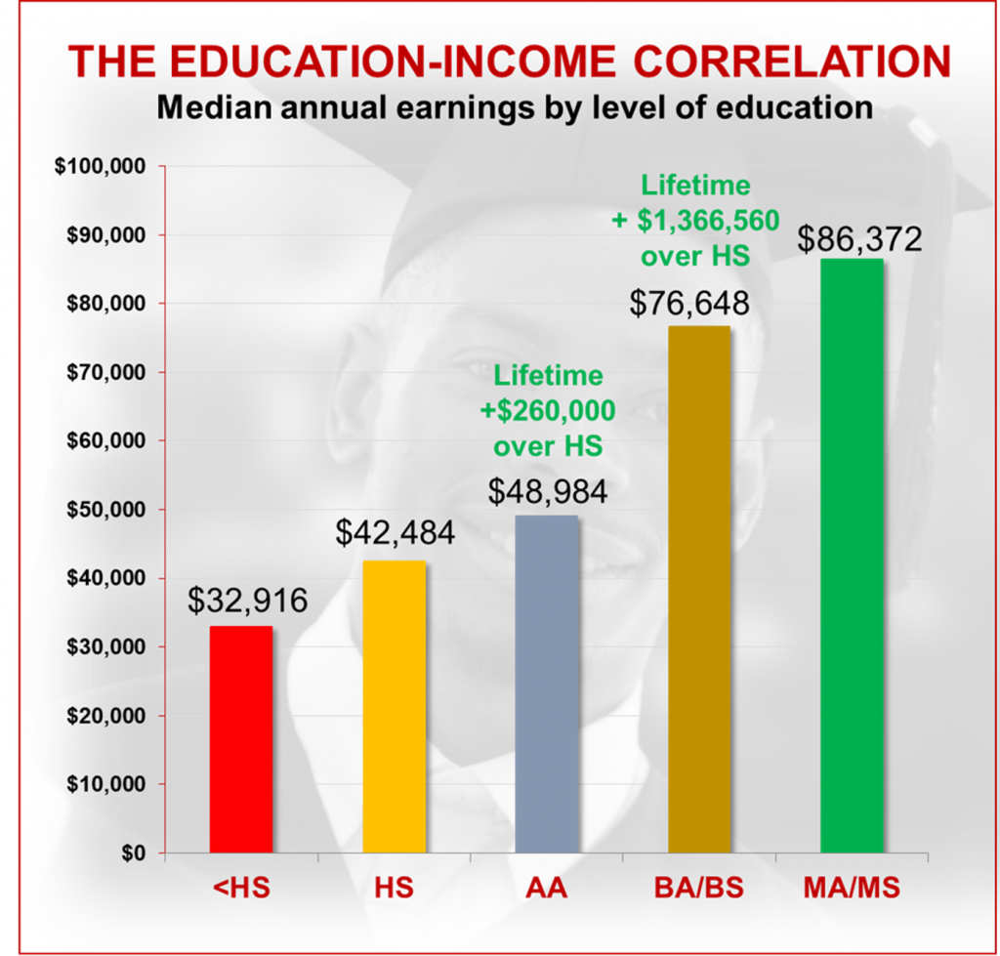
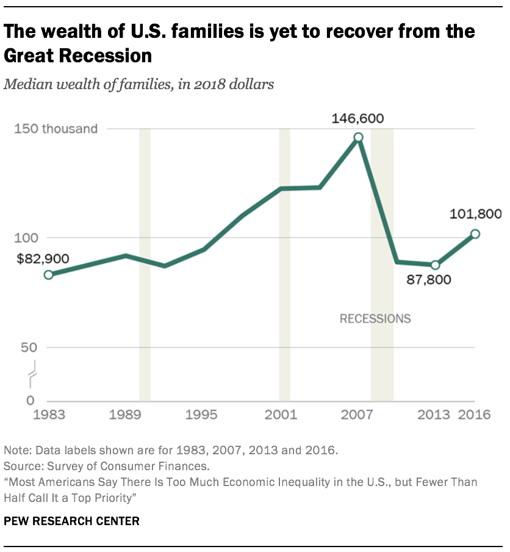

Education
More education can help people make more money.

Work hard and become wealthy? Maybe not. The graphs [1] show some different paths.
More education can help people make more money.

People born in wealthy families often become wealthier.
